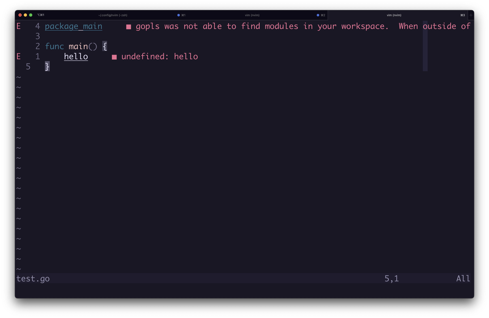

Setting up Neovim LSP
Updated: 30/07/2023
A goal of mine is to, by the end of the year, contribute to Neovim.
Or open a PR which is swiftly rejected.
Why start with LSP?
I use Packer to setup various plugins, notably lsp-zero and Mason, which provide the bulk of my functionality, with Harpoon and Telescope for maneuverability.
I have no idea how these plugins work.
When something breaks, I have no idea how to fix it, and am reliant on package maintainers.
This is not awful, after all, the maintainers know much more than me.
However, I would like to learn.
What is an LSP?
An LSP, or "Language Server Protocol", allows a client (your editor) to communicate with a Language Server.
This allows your editor to utilise the info returned to perform actions such as: go-to-definition, rename, hover details, format, etc.
Which LSPs do I need to setup?
For my work, I will need to setup the following LSPs.
- Go
- Lua
- Typescript
- Eslint
- CSS
- Prettier
- PHP
I won't setup all of these in this document, but my Neovim config is public.
How to setup Neovim LSP without plugins
It is remarkably straightforward to setup the LSP using the Neovim API.
- Create an LSP client
- Attach the client to the current buffer
Create an LSP client
The LSP client in Neovim defines and initiates the Language Server process.
Here is how I setup the LSP client ('gopls') for Go:
vim.lsp.start({ -- Start an LSP client
name = 'gopls', -- A unique name for this client
cmd = { 'gopls' }, -- The terminal command which starts the LSP
})Install the Go LSP
This will not work if:
- 'gopls' is not installed
- 'gopls' is not available on your path
All command line code blocks are written as if they should be executed within Neovim.
You should be able to execute in your command line:
:!which goplsIt will return the install directory if it is installed and part of your PATH.
To get the best results within the rest of this article, you should create a main.go file
and fill it with package main and a main func.
Create the LSP
To create the LSP Client, you can run this command:
:lua =vim.lsp.start({ name = 'gopls', cmd = { 'gopls' }})This should return 1 if successful.
To double-check, you can return the details of all active clients:
:lua =vim.lsp.get_active_clients()The data returned contains information about the client.
Find the id of the client with the name 'gopls'.
Connect the client to the current buffer
Now we just need to attach the client to the buffer.
We know our client id, and 0 is a shorthand for the active buffer, so to attach it we can run:
:lua vim.lsp.buf_attach_client(buffer_name, client_id)
:lua vim.lsp.buf_attach_client(0, 1)If the buffer is a go file, type some invalid code and you will see errors and warnings appear inline.

In a simple project, you could also try some of the other lsp functionality, such as:
- Go to definition
:lua lsp.vim.buf.definition() - Format the buffer
:lua lsp.vim.buf.buffer() - Display 'hoverable' symbol information
:lua lsp.vim.buf.hover() - Select an available code action
:lua lsp.vim.buf.code_action()
You can easily see most of these commands by typing :lua vim.lsp.buf. and then
pressing tab.
Automate LSP setup for filetype
I want to automate LSP client creation and attachment to buffer.
I also want to attach the appropriate LSP's to the correct filetype.
Create Neovim config file
I created a 'lsp-go.lua' file in my lua/tjmblake directory, and made sure it is required by init.lua.
Create auto command
I created an auto command, a command which triggers automatically on read / write of a buffer.
I set the type of auto command to "FileType", so I can set a pattern to match against the file type. I set this to match for Go files.
If the pattern is matched, the callback is executed.
In this callback, I want to create my client and attach it to the active buffer.
-- lua/tjmblake/lsp-go.lua
vim.api.nvim_create_autocmd("FileType", { -- Create an autocommand for filetype
pattern = "go", -- Run callback when FileType == go
callback = function() -- The callback is what we want to exec
local root_dir = vim.fs.dirname( -- Find the root project directory
vim.fs.find({ 'go.mod', 'go.work', '.git' }, { upward = true })[1]
)
local client = vim.lsp.start({ -- Create the LSP client
name = 'gopls',
cmd = { 'gopls' },
root_dir = root_dir,
})
vim.lsp.buf_attach_client(0, client) -- Attach client to current buffer
end
})What is the root_dir?
You are probably wondering what this root_dir is for. As it was not used before.
The root dir is important. It references your project root.
When we configure this LSP to run on .go files, we want to make sure to reuse the same LSP client / server instead of having a new LSP run for each file.
However, if I open a new go project in another buffer, I want a new client to be created for that project.
The vim.lsp.start method takes care of this for us, so long as we provide a root_dir.
Warning: vim.lsp.start_client does not, and hands over the reigns entirely to you.
To get the root_dir, I use vim.fs.find to traverse my project until I find either a
go.mod, go.work or .git file/dir. I then use vim.fs.dirname to extract the directory
name.
How can I edit .lua effectively?
If would help if we had some formatting / diagnostics while creating these auto commands in lua.
After installing lua-language-server, it is relatively easy to setup.
-- lua/tjmblake/lsp-lua.lua
vim.api.nvim_create_autocmd("FileType", {
pattern = "lua",
callback = function()
local root_dir = vim.fs.dirname(
vim.fs.find(
{
".luarc.json",
".luarc.jsonc",
".luacheckrc",
".stylua.toml",
"stylua.toml",
"selene.toml",
"selene.yml",
".git"
},
{ upward = true })[1]
)
local client = vim.lsp.start({
name = 'lua-language-server',
cmd = { 'lua-language-server' },
root_dir = root_dir,
})
vim.lsp.buf_attach_client(0, client)
end
})It is exactly the same procedure as before, with some alternate file types.
To be honest, I have never seen most of these file types before, but it can't hurt.
Fixing Lua "vim namespace not found" type errors
The Lua LSP connection now works, however, I would like it access to the Neovim API code so I get more context when using the API.
The LSP cannot access this, as Vim is a global and the Neovim code is not within my project directory.
To provide access, I looked at nvim-lspconfig to see how they implemented it.
There is a lot going on there, but I did take this declaration of settings.
Settings is passed to the vim.lsp.start function and can alter the client configuration.
settings = {
Lua = {
runtime = {
version = "LuaJIT", -- Neovim uses LuaJIT
},
diagnostics = {
globals = { "vim" } -- This makes the vim global namespace available
},
workspace = {
library = vim.api.nvim_get_runtime_file("", true), -- This gets the Neovim runtime and adds it to our workspaces.
checkThirdParty = false,
},
telemetry = {
enable = false,
},
},
},This generally works well, but not all Vim APIs are available via omnifunc, cmp, such as vim.lsp. I will fix this later when I handle completion (to be written).
The main thing is this removes the 'vim namespace not found' errors.
Set up LSP for Typescript, Eslint
This will require having the vscode extracted language servers installed, alongside typescript language server.
Setup Typescript
Setting up Typescript LSP is business as usual.
-- lua/tjmblake/lsp-typescript.lua
vim.api.nvim_create_autocmd("FileType", {
pattern = {
'javascript',
'javascriptreact',
'javascript.jsx',
'typescript',
'typescriptreact',
'typescript.tsx'
},
callback = function()
local root_dir = vim.fs.dirname(
vim.fs.find({ 'package.json', '.git' }, { upward = true })[1]
)
local client = vim.lsp.start({
name = 'typescript-language-server',
cmd = { 'typescript-language-server', '--stdio' },
root_dir = root_dir,
})
vim.lsp.buf_attach_client(0, client)
end
})Setup Eslint
Eslint was straightforward to setup. I went and borrowed the settings configuration from nvim-lspconfig again.
vim.api.nvim_create_autocmd("FileType", {
pattern = {
'javascript',
'javascriptreact',
'javascript.jsx',
'typescript',
'typescriptreact',
'typescript.tsx',
},
callback = function()
local root_dir = vim.fs.dirname(
vim.fs.find({ '.eslintrc' }, { upward = true })[1]
)
local client = vim.lsp.start({
name = "eslint",
cmd = { 'vscode-eslint-language-server', '--stdio' },
root_dir = root_dir,
settings = {
validate = 'on',
packageManager = 'yarn',
useESLintClass = false,
experimental = {
useFlatConfig = false,
},
codeActionOnSave = {
enable = false,
mode = 'all',
},
format = true,
quiet = false,
onIgnoredFiles = 'off',
rulesCustomizations = {},
run = 'onType',
problems = {
shortenToSingleLine = false,
},
nodePath = '',
workingDirectory = { mode = 'location' },
codeAction = {
disableRuleComment = {
enable = true,
location = 'separateLine',
},
showDocumentation = {
enable = true,
},
},
},
})
vim.lsp.buf_attach_client(0, client)
end,
})The reason I am showing these alternate configurations is to show that there are only minor differences, specific to the LSP's root_dir pattern or settings.
Otherwise, it's fairly consistent.
This is because LSP is a protocol for communicating between a editor/client and language server.
Binding common LSP functions
This article is not about setting up keybindings. For my own use, since I am used to them, I have copied over the bindings from lsp-zero.
vim.api.nvim_create_autocmd("LspAttach", {
callback = function(args)
local bufnr = args.buf
local opts = { buffer = bufnr, remap = false }
vim.keymap.set("n", "gd", vim.lsp.buf.definition, opts)
vim.keymap.set("n", "K", vim.lsp.buf.hover, opts)
vim.keymap.set("n", "<leader>vws", vim.lsp.buf.workspace_symbol, opts)
vim.keymap.set("n", "<leader>vd", vim.diagnostic.open_float, opts)
vim.keymap.set("n", "[d", vim.diagnostic.goto_next, opts)
vim.keymap.set("n", "]d", vim.diagnostic.goto_prev, opts)
vim.keymap.set("n", "<leader>vca", vim.lsp.buf.code_action, opts)
vim.keymap.set("n", "<leader>vrr", vim.lsp.buf.references, opts)
vim.keymap.set("n", "<leader>vrn", vim.lsp.buf.rename, opts)
vim.keymap.set("i", "<C-h>", vim.lsp.buf.signature_help, opts)
end,
})Summary
Setting up these LSP clients within Neovim using the API is fairly straightforward.
The Neovim documentation is approachable using the :help vim.lsp command.
Now that I have a initial understanding of the API, stealing taking
inspiration from other LSP plugins (such as lsp-zero, nvim-lspconfig)
is much more approachable.
The ability to now look at other plugins and dive-deeper into the why will be useful going forward. Even just for the small area I've covered so far.
While I use omnifunc a fair amount, lsp-zero provides a tight integration with nvim-cmp for auto-completion.
I have not replicated this in the article because I want to compare using Omnifunc for a while.